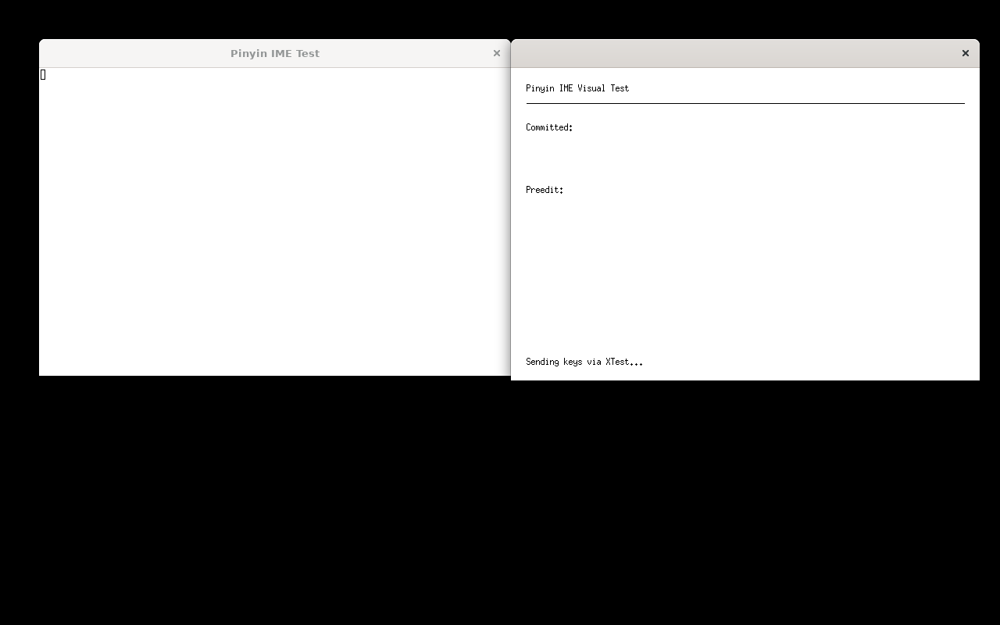
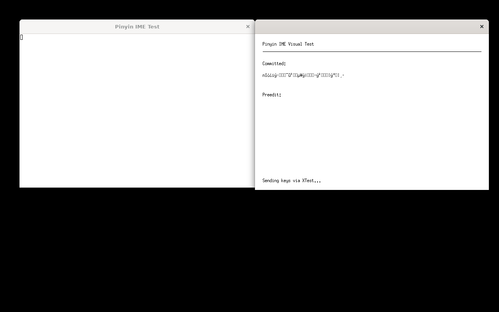
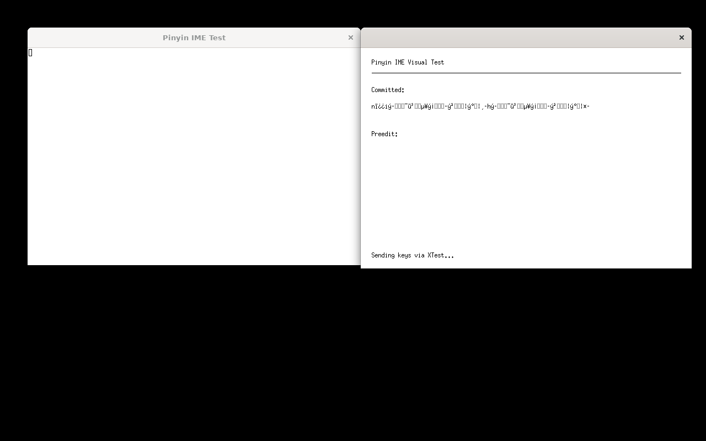
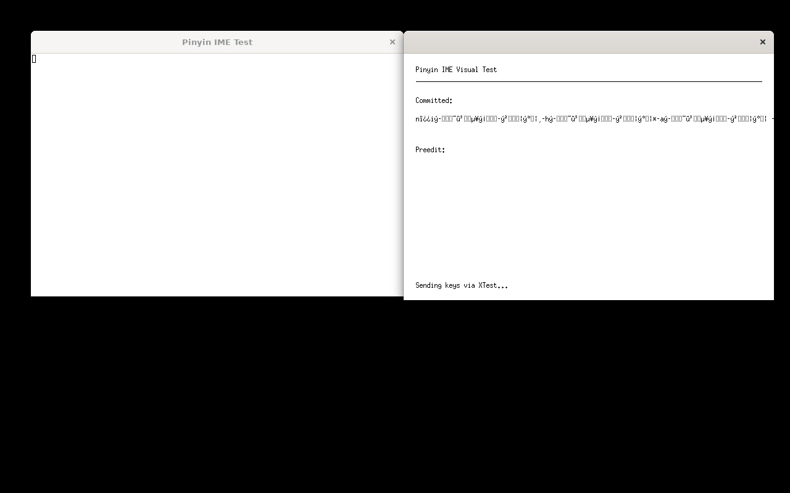

2. After Ctrl+Space (IME Activated)
Pinyin input method activated

Test: Ctrl+Space → n i h a o → Space → 你好
Xvfb :99 + metacity + fcitx5 + test window

Pinyin input method activated
Preedit should show n
Preedit should show ni → 你

Preedit should show nih

Preedit should show niha

Candidate window should show 你好

你好 should be committed to the window

Window after 5 seconds